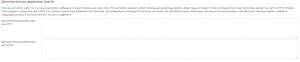

")
FAQ
Мне надо прикрепить домен. Какие у вас NS?
Для прикрепления домена необходимо, чтобы он уже был зарегистрирован, то есть существовал. Для доменов необходимо использовать следующие NS сервера.
- ns1.hosts.network
- ns2.hosts.network
NS сервера прописываются у Вашего регистратора доменов. Используйте FAQ регистратора для того, чтобы узнать. как это сделать.
short_open_tag — что оно такое?
Что это такое?
Определяет, разрешается ли короткая форма записи тегов PHP. Если вы хотите использовать PHP совместно с XML, вы можете отключить эту опцию, чтобы беспрепятственно использовать. В противном случае, вы можете отобразить это при помощи PHP, например: ‘; ?>. Если же эта опция отключена, вы должны использовать длинную форму открывающего тега PHP.
Как включить такой тэг?
Перейдите в Plesk Panel, затем найдите пункт »Настройки PHP». Нажмите на него.
В разделе »Общие настройки» смените значение пункта »short_open_tag» с »off» (по умолчанию) на »on». — Нажмите »ОК» и дождитесь перезагрузки выделенного экземпляра PHP.
Как только настройки применятся, Вы вернетесь на панель управления сайтом с сообщением подтверждения операции.
Почему тэг по умолчанию выключен?
Пользователь самостоятельно управляет конфигурацией веб-сервера, поэтому она поставляется в чистом варианте.
Как убрать #1214 — The used table type doesn’t support FULLTEXT indexes?
Только движок хранения данных »MyISAM» поддерживает »FULLTEXT». В SQL файле у таблиц, которые используют полнотекстовый индекс, замените »InnoDB» на »MyISAM». Для этого в конец допишите как на примере »ENGINE=MyISAM»:
CREATE TABLE gamemech_chat ( id bigint(20) unsigned NOT NULL auto_increment, from_userid varchar(50) NOT NULL default ‘0’, to_userid varchar(50) NOT NULL default ‘0’, text text NOT NULL, systemtext text NOT NULL, timestamp datetime NOT NULL default ‘0000-00-00 00:00:00’, chatroom bigint(20) NOT NULL default ‘0’, PRIMARY KEY (id), KEY from_userid (from_userid), FULLTEXT KEY from_userid_2 (from_userid), KEY chatroom (chatroom), KEY timestamp (timestamp) ) ENGINE=MyISAM;
Все таблицы переводить не нужно. Найдите таблицы, которые используют полнотекстовый поиск, по следующему выражению: »ADD FULLTEXT KEY».
Из чего состоит полное управление аккаунтом?
Управление настройками хостинга
Следующие параметры хостинга действуют как шаблон: поддержка SSL/TLS и языков программирования и скриптов, пользовательские страницы ошибок, настройки веб-сервера.
Управление общими настройками PHP
Позволяет клиентам указывать общие настройки PHP индивидуально для каждого сайта.
Управление версией и обработчиком PHP
Позволяет клиентам выбирать версию PHP и обработчик PHP индивидуально для каждого сайта.
Управление планировщиком
Эта опция также дает право выполнять запланированные задачи с помощью оболочки с измененной корневой папкой (если в параметрах хостинга не указана другая оболочка).
Управление настройками хостинга
Позволяет менять настройки производительности: максимальную пропускную способность, количество подключений, индивидуальные настройки производительности PHP для сайтов.
Настройки PHP
Здесь вы можете указать индивидуальные настройки PHP для отдельных веб-пространств, которые будут действовать вместо глобальных настроек из файла php.ini. Это может пригодиться, если вы, например, захотите ограничить потребление системных ресурсов PHP-скриптами. Также Вы можете указать собственные настройки на уровне домена. Параметры, для которых вы оставите значение по умолчанию, будут взяты из глобальных настроек PHP. Поддерживаемые замещающие символы: {DOCROOT} и {WEBSPACEROOT} служат для обозначения корневой папки того домена или подписки, для которых предназначена индивидуальная конфигурация PHP; {TMP} служит для обозначения папки, в которой будут храниться временные файлы.
Дополнительные директивы
Если вы не нашли нужные вам параметры PHP в приведенном списке, вы можете добавить их вручную. Эти директивы будут включены в финальную конфигурацию PHP. Пожалуйста, используйте такой же синтаксис, как для php.ini. Например, чтобы включить автоматическую загрузку расширения Phalcon, добавьте следующую строку:»extension=phalcon.so».
Как создать копию базы данных?
Для создания резервной копии БД вам необходимо авторизоваться в панели управления, затем выбрать «phpMyAdmin», в появившемся окне указать данные для подключения к БД, имя пользователя и пароль (обычно они вводятся автоматически). Служба поддержки не знает этих данных, вы их указывали самостоятельно при создании БД. Если вы не помните логин и пароль, посмотреть их можно в конфигурационных файлах вашего сайта. После авторизации в phpMyAdmin, в левом блоке выберите базу данных, которую хотите сохранить. После этого, в верхнем меню выберите «Экспорт». Если вы не понимаете значения параметров «Способ экспорта» и «Формат», просто нажмите «ОК», после чего вам будет предложено выбрать папку на вашем ПК для сохранения БД.
Почему у меня таймауты при передаче файлов?
Если передача небольших файлов происходит без проблем, но загрузка больших файлов обрывается по таймауту, причиной этого является неправильно настроенный роутер и/или файрвол находящийся между клиентом и сервером. Как было сказано выше, в FTP используются два TCP-подключения: контрольное подключение для отсылки команд и получения ответов на команды, а также подключение для передачи данных. По принципу работы FTP контрольное соединение не используется во время передачи файлов. В спецификации TCP не указывается лимит времени для сохранения неиспользуемого подключения. Предполагается, что подключение сохраняется на неопределенное время пока не будет закрыто явным образом. Тем не менее, большинство роутеров и файрволов автоматически закрывают свободные подключения по истечению некоторого времени. Более того, в большинстве случаев разрыв соединения происходит без уведомления об этом его участников. В случае продолжительной передачи данных через FTP , это значит, что контрольное соединение может быть разорвано, но ни клиент, ни сервер не будут об этом уведомлены. Таким образом, после того, как все данные были переданы, сервер все еще ожидает, что контрольное подключение можно использовать и отсылает через него подтверждение передачи клиенту. Аналогично, клиент готов использовать контрольное соединение и ожидает ответа от сервера. Но, т.к. контрольное соединение было разорвано, это ответ никогда не будет доставлен, что приводит к таймауту. Для решения этой проблемы спецификация TCP предусматривает способ отправки пакетов для поддержки неиспользуемого подключения, сообщающих участников о том, что соединение требуется сохранить для дальнейшего использования. Тем не менее, в спецификации TCP явно указывается, что такие пакеты можно передавать не чаще, чем один раз каждые два часа. Для этого, предусматривая задержки в сети, срок жизни неиспользуемого подключения устанавливается спецификацией в 2 часа и 4 минуты. Препятствием этому служит то, что многие роутеры и файрволы разрывают соединения, которые не использовались меньше чем 2 и 4 минуты. Такое поведение нарушает спецификацию протокола TCP, в RFC 5382 это указано достаточно ясно. Другими словами, роутеры и файрволы, разрывающие соединение раньше нужного момента, нельзя признать рабочими, т.к. они не могут использоваться при длительной передаче данных через FTP. К сожалению, производители роутеров потребительского класса и поставщики файрволов не заботятся о соблюдении спецификаций. Для решения этой проблемы вам нужно удалить такие файрволы и заменить неправильно работающий роутер на качественный.
Как добавить запись TXT к домену для SSL сертификата?
- Войдите в панель управления и перейдите в раздел «Настройки DNS».
- Нажмите кнопку «Добавить запись».
- Выберите следующие параметры:
- В разделе «Тип записи» выберите «TXT»;
- В разделе «Имя домена» ничего не вводите;
- В разделе «TXT запись» вставьте полное значение записи, например abcdefg.
- Нажмите кнопку ОК.
Почему у меня ошибка 502?
Сама по себе ошибка простая. Она означает, что бекэнд (Apache2 или иной сервер) не работает, хотя фронтэнд (nginx) пытается отправлять с него данные и получать их.
Решение — перезапуск Apache, для этого проделайте следующие действия.
- Зайдите в панель управления.
- Перейдите в настройки PHP.
- Нажмите кнопку ОК.
Ваш процесс Apache2 будет запущен снова.
Вы спросите: «Почему перезапускать через настройки PHP?». Все дело в том, что Plesk разделяет пользователей. Каждый из них работает на выделенном экземпляре и среде хостинга, и потому процессы используются отдельные.
Почему у меня ошибка 404?
Ошибка 404 означает, что страница не была найдена.
Наиболее частые причины 404 это:
- неверно загруженный дистрибутив или файл (должен быть в папке httpdocs или в папке с именем домена)
- отсутствие правила в файле .htaccess, чтобы починить смотрите мануал
- неправильная ссылка на файл
Почему у меня ошибка 403?
403 возникает тогда, когда к файлу или папке доступ запрещен. Проверьте права. Также может быть, что файл или папка просто отсутствуют, как и в случае с 404.
Есть ли бэкапы?
Мы бэкапим контент в 00:00 каждый день инкрементно, но Вы можете создать копию и из своего аккаунта. Мы настоятельно рекомендуем это делать.
Почему на моем сайте ошибка 451?
Если Вы увидели такую ошибку на сайте… все, аллес капут. Это значит, что запрашиваемый сайт включен в единый реестр доменных имен, указателей страниц сайтов в сети «Интернет» и сетевых адресов, позволяющих идентифицировать сайты в сети «Интернет», содержащие информацию, распространение которой в Российской Федерации запрещено. Для проверки ограничения доступа к сайтам и (или) страницам сайтов сети «Интернет» в рамках исполнения иных положений Федерального закона от 27.07.2006 года № 149-ФЗ «Об информации, информационных технологиях и защите информации», рекомендуем воспользоваться http://blocklist.rkn.gov.ru/. Разблокировать ресурс уже никак не получится, так как решение было принято судом или прокуратурой. Впрочем, попробовать отстоять свои права никто не мешает, но для этого Вам потребуется квалифицированный юрист. Вы не сможете увидеть реестр запрещенных сайтов, так как он рассылается только провайдерам. Обычный пользователь может лишь проверить ресурс на включение в реестр.
Что такое ошибка 505?
Введение
Веб-сервер, работающий на сайте, не поддерживает или отказывается поддерживать версию протокола »HTTP», указанную клиентом (например, вашим веб-браузером) в потоке данных »HTTP-запроса», отправленном на сервер. Протокол »HTTP» имеет различные версии, определенные как major.minor, например. версии »0.9», »1.0» или »1.1». Сервер указывает, что он не может или не желает выполнить запрос с использованием основной версии, предоставленной клиентом, — кроме этого сообщения об ошибке. Предполагая, что ваш запрос идентифицирует действительный номер версии major.minor (запрос не является подмененным по существу), эта ошибка должна возникать, главным образом, только в том случае, если вы пытаетесь использовать версию »HTTP/2», но веб-сервер поддерживает только более старую версию »’0.9», »1.0» или »1.1».
Общее решение ошибки
Большинство веб-браузеров предполагают, что веб-серверы поддерживают версии 1.x протокола HTTP. На практике очень старые версии, такие как 0,9, сегодня мало используются, не в последнюю очередь потому, что они обеспечивают более низкую безопасность и производительность, чем более новые версии протокола. Поэтому, если вы видите эту ошибку в своем веб-браузере, единственным вариантом является обновление программного обеспечения веб-сервера.
Если запросы версии 1.x терпят неудачу, вполне возможно, что веб-сервер плохо поддерживает версии протокола 1.x, а не вообще не поддерживает их. Также решением может выступать отключение на CloudFlare »SPDY» / »HTTP/2». Те же аргументы применяются, если ваш клиент не является веб-браузером. Ошибка 505 в цикле HTTP Любой клиент (например, ваш браузер) проходит следующий цикл, когда он общается с веб-сервером:
— Получение адреса сайта с помощью доменного имени с виртуального хоста (URL-адрес сайта). Это преобразование предоставляется серверами доменных имен (DNS).
— Открытие соединения IP-сокета с этим IP-адресом.
Запись потока данных HTTP через этот сокет.
— Получение в ответ HTTP-потока данных с веб-сервера.
Поток данных содержит коды состояния, значения которых определяются протоколом HTTP. Разберите этот поток данных для кодов состояния и другой полезной информации. Это можно сделать через журнал доступа к веб-серверу. Эта ошибка возникает на последнем шаге, который указан выше, когда клиент получает код состояния HTTP, который он распознает как «505».
Почему PHP файлы скачиваются?
Проблема очень редкая.
По умолчанию PHP включен всегда, поэтому если у Вас показывается код, то выполните следующее…
— Неверно выбрана версия PHP — поменяйте в »Настройках PHP»
— Выключен »short_open_tag» — включите в »Настройках PHP»
— Неправильный формат файла — может поломаться, если использовать, например, Блокнот вместо Notepad++
Что такое веб-приложение?
Веб-приложение — клиент-серверное приложение, в котором клиент взаимодействует с сервером при помощи браузера, а за сервер отвечает — веб-сервер. Логика веб-приложения распределена между сервером и клиентом, хранение данных осуществляется, преимущественно, на сервере, обмен информацией происходит по сети. Примеры: СБИС, BILLmanager.
Что такое сайт (веб-сайт)?
Веб-сайт — совокупность логически связанных между собой веб-страниц; также место расположения контента сервера.
Что такое CMS?
Система управления контентом (CMS) — это компьютерное приложение, которое поддерживает создание и модификацию цифрового контента. Оно обычно поддерживает несколько пользователей в совместной среде. Возможности CMS широко варьируются.
Что такое охраняемая законом информация?
Под охраняемой законом понимается информация, для которой законом установлен специальный режим ее правовой защиты (например, государственная, служебная и коммерческая тайна, персональные данные и т.д.).
Неправомерным считается доступ к конфиденциальной информации или информации, составляющей государственную тайну, лица, не обладающего необходимыми полномочиями (без согласия собственника или его законного представителя), при условии обеспечения специальных средств ее защиты.
Другими словами, неправомерный доступ к компьютерной информации — это незаконное либо не разрешенное собственником или иным ее законным владельцем использование возможности получения компьютерной информации. При этом под доступом понимается проникновение в ее источник с использованием средств (вещественных и интеллектуальных) компьютерной техники, позволяющее использовать полученную информацию (копировать, модифицировать, блокировать либо уничтожать ее).
Состав данного преступления носит материальный характер и предполагает обязательное наступление одного из последствий:
а) уничтожение информации — это приведение информации или ее части в непригодное для использования состояние независимо от возможности ее восстановления. Уничтожением информации не является переименование файла, где она содержится, а также само по себе автоматическое «вытеснение» старых версий файлов последними по времени;
б) блокирование информации — результат воздействия на компьютерную информацию или технику, последствием которого является невозможность в течение некоторого времени или постоянно осуществлять требуемые операции над компьютерной информацией полностью или в требуемом режиме, то есть совершение действий, приводящих к ограничению или закрытию доступа к компьютерному оборудованию и находящимся на нем ресурсам, целенаправленное затруднение доступа законных пользователей к компьютерной информации, не связанное с ее уничтожением;
в) модификация информации — внесение изменений в компьютерную информацию (или ее параметры). Законом установлены случаи легальной модификации программ (баз данных) лицами, правомерно владеющими этой информацией, а именно: модификация в виде исправления явных ошибок; модификация в виде внесения изменений в программы, базы данных для их функционирования на технических средствах пользователя; модификация в виде частной декомпиляции программы для достижения способности к взаимодействию с другими программами;
г) копирование информации — создание копии имеющейся информации на другом носителе, то есть перенос информации на обособленный носитель при сохранении неизменной первоначальной информации, воспроизведение информации в любой материальной форме — от руки, фотографированием текста с экрана дисплея, а также считывания информации путем любого перехвата информации и т.п.
Если в силу настроек компьютерной программы при работе с ней, пусть даже и в результате неправомерного доступа, автоматически создается резервная копия компьютерной информации, то данное действие не будет иметь уголовно-правовых последствий, поскольку оно осуществляется независимо от волеизъявления лица и, соответственно, в прямой причинной связи с его действиями не состоит.
— ГЕНЕРАЛЬНАЯ ПРОКУРАТУРА РОССИЙСКОЙ ФЕДЕРАЦИИ. МЕТОДИЧЕСКИЕ РЕКОМЕНДАЦИИ ПО ОСУЩЕСТВЛЕНИЮ ПРОКУРОРСКОГО НАДЗОРА ЗА ИСПОЛНЕНИЕМ ЗАКОНОВ ПРИ РАССЛЕДОВАНИИ ПРЕСТУПЛЕНИЙ В СФЕРЕ КОМПЬЮТЕРНОЙ ИНФОРМАЦИИ
Как я могу проксировать сайт с другого сервера?
В секции «Настройки Apache и Nginx» найдите поля «Дополнительные директивы Apache».

Вставьте туда следующий код
ProxyPreserveHost On
ProxyPass / http://0.0.0.0:8080/
ProxyPassReverse / http://0.0.0.0:8080/
ServerName localhost
где
ProxyPreserveHost — передача исходных имен в заголовке,
ProxyPass — посылаем запрос, порт ставьте свой
ProxyPassReverse — принимаем запрос, порт ставьте свой
ServerName — имя сервера, например site.ru
Какие DNS у Яндекса?
Сразу говорим.
Не путайте DNS и NS. DNS (Domain Name Services) — службы доменов, используются при создании соединения с Интернет. NS (Name Servers) — сервера имен, используются для прикрепления сайтов к хостингу.
Яндекс.DNS:
(Ведет сбор статистики и заявляет, что может передать ее другим лицам)(Россия)(RU)(Cloud)
без фильтрации:
77.88.8.8 — 77.88.8.1
ipv6:
2a02:6b8::feed:0ff — 2a02:6b8:0:1::feed:0ff
фильтрация опасных сайтов:
77.88.8.88 — 77.88.8.2
Что вы посоветуете по заказу?
Давайте разберемся, что именно вы покупаете.
Вам говорят, что услуги конкретной компании самые лучшие (не будем называть компаний, чтобы не обижать их). Но на деле это оказывается совсем не так и у Вас возникает разочарование в продукте. К тому же, вы теряете средства и клиентов (в случае сайта или выделенного сервера), или деньги и игроков (в случае игрового сервера). В этом случае важна квалифицированная поддержка. Мы не будем говорить, что предоставляем ее 24/7 — администраторам тоже нужно отдыхать — но мы постараемся минимизировать Ваши риски потерь клиентов. И это самое важное. Что касается стоимости, то мы выставляем честные цены за конкретную услугу.
Например, Вам нужно разместить стандартный сайт или форум с невысокой посещаемостью. Для него хватит и панели управления Plesk. Если же сайт или форум часто выдает ошибки, требует нагрузки, то это уже VPS/VDS (для не переменных нагрузок), или облачный сервер (для игровых серверов и проектов с переменной нагрузкой).
Резервное копирование не менее важно. Необходимо понимать, что даже при SLA 99.95% сервера могут простаивать. Это обусловлено внешними факторами, в том числе, и человеческим фактором.
Поэтому, прежде чем приобрести конкретную услугу, ознакомьтесь с нашим прайсом, спецификациями, а также требованиями к Вашему ПО. И отталкивайтесь об этого.
Как исправить ошибку UpstreamBridge has disconnected в майнкрафт?
В майкрафте эта штука иногда попадается. Пошарив в буржунете, мы нашли множество интересных причин, по которым ошибка UpstreamBridge has disconnected может попадаться, но решений этой проблемы наоборот, немного. Поэтому и здесь их будет ровно столько же.
- Параметр keepalive сликом маленький и его не хватает.
- Мешает плагин AntiBotDeluxEx или какие-то иные плагины. Решение — удалить плагин.
- Заменить все IP и домены в config.yml в bungeecord на 0.0.0.0. Рестартовать банги.
- Проблемы с сеткой — в этом случае к хостеру.
- Сменить порог подключения в bukkit.yml с значения -1 на значение 4000 на спиготе (не на банги!).